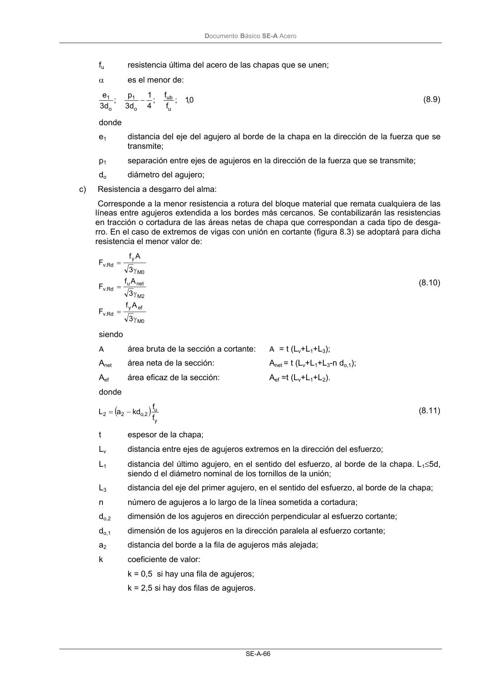

DB-SE-A Acero · edición 2007-10-23 · capa oficial
Documento DB-SE-A-oficial · SHA-256 del PDF 9ed9ea694aabfbda3bfbbef40dfe9223fde05d13c35bc2ba9751e5a96a22a64f
Página física 68 de 168.
Copia fiel del PDF fuente · Fuente oficial
Ficha de la disposición en la fuente oficial
Formato: Texto de la página (Markdown)
Documento Básico SE-A Acero SE-A-66 fu resistencia última del acero de las chapas que se unen; α es el menor de: 0,1 ; f f ; 4 1 d 3 p ; d 3 e u ub o 1 o 1 − (8.9) donde e1 distancia del eje del agujero al borde de la chapa en la dirección de la fuerza que se transmite; p1 separación entre ejes de agujeros en la dirección de la fuerza que se transmite; do diámetro del agujero; c) Resistencia a desgarro del alma: Corresponde a la menor resistencia a rotura del bloque material que remata cualquiera de las líneas entre agujeros extendida a los bordes más cercanos. Se contabilizarán las resistencias en tracción o cortadura de las áreas netas de chapa que correspondan a cada tipo de desga- rro. En el caso de extremos de vigas con unión en cortante (figura 8.3) se adoptará para dicha resistencia el menor valor de: 0 M ef y Rd .v 2 M net u Rd .v 0 M y Rd .v 3 A f F 3 A f F 3 A f F γ = γ = γ = (8.10) siendo A área bruta de la sección a cortante: A = t (Lv+L1+L3); Anet área neta de la sección: Anet = t (Lv+L1+L3-n do,1); Aef área eficaz de la sección: Aef =t (Lv+L1+L2). donde ( ) y u 2 , o 2 2 f f kd a L − = (8.11) t espesor de la chapa; Lv distancia entre ejes de agujeros extremos en la dirección del esfuerzo; L1 distancia del último agujero, en el sentido del esfuerzo, al borde de la chapa. L1≤5d, siendo d el diámetro nominal de los tornillos de la unión; L3 distancia del eje del primer agujero, en el sentido del esfuerzo, al borde de la chapa; n número de agujeros a lo largo de la línea sometida a cortadura; do,2 dimensión de los agujeros en dirección perpendicular al esfuerzo cortante; do,1 dimensión de los agujeros en la dirección paralela al esfuerzo cortante; a2 distancia del borde a la fila de agujeros más alejada; k coeficiente de valor: k = 0,5 si hay una fila de agujeros; k = 2,5 si hay dos filas de agujeros.
